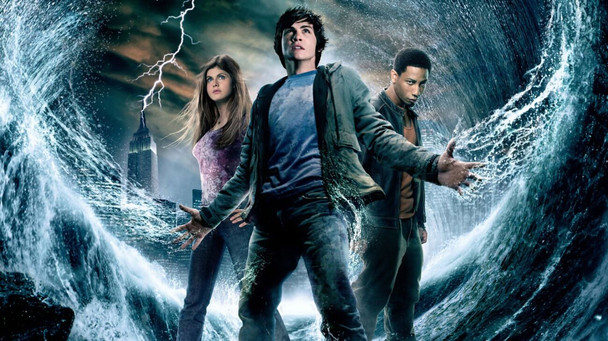
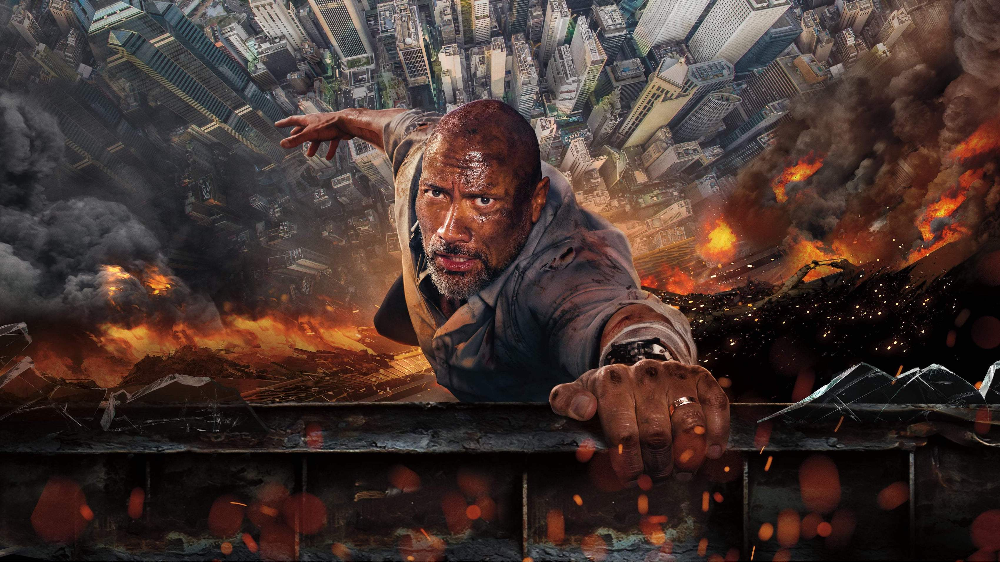
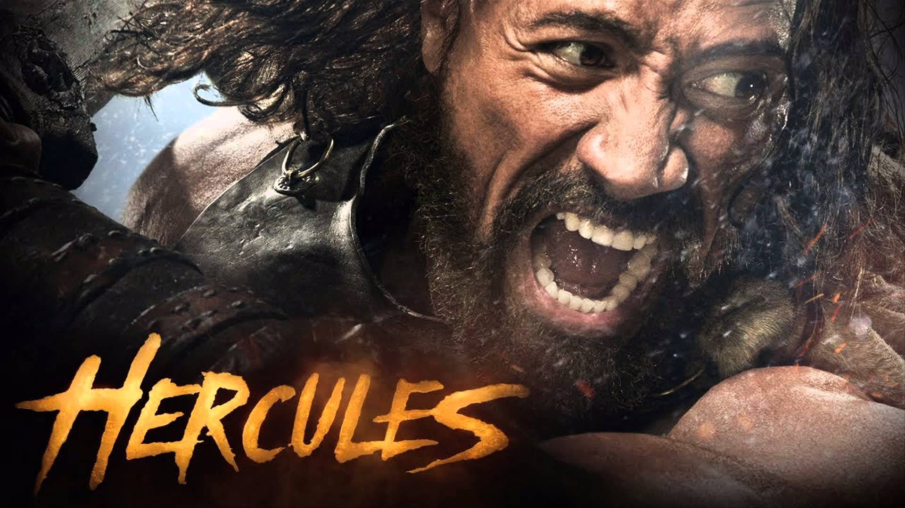
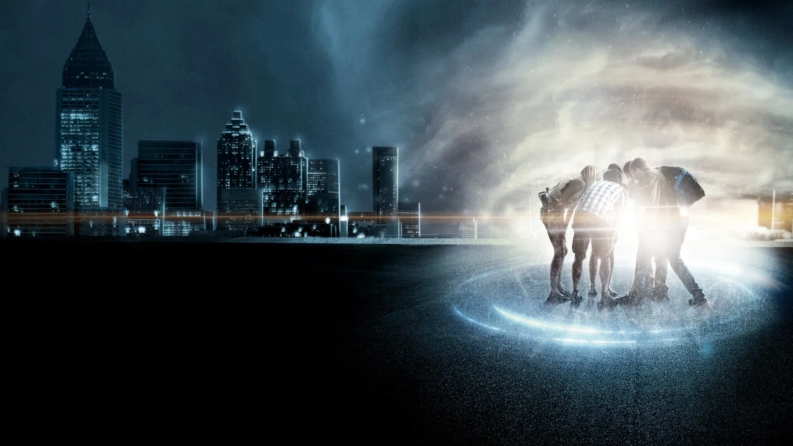
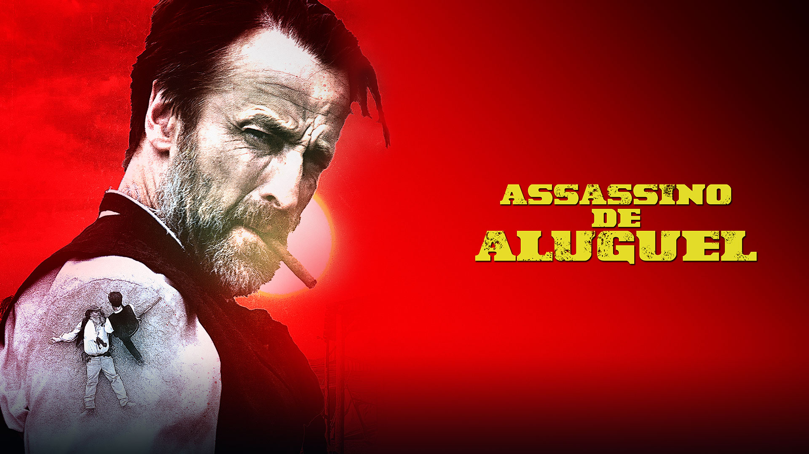
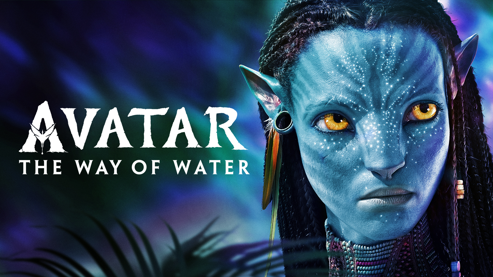

Em um futuro próximo, as lutas de boxe substituíram os humanos por robôs gigantes. Charlie Kenton (Hugh Jackman), um ex-boxeador falido, descobre que tem um filho e, com ele, começa a construir e treinar um robô para participar de competições ilegais — buscando redenção e reconexão familiar.
Luca •1h 35min
Em meio à trágica viagem inaugural do navio Titanic, nasce o romance entre Jack, um artista pobre, e Rose, uma jovem da alta sociedade. A história de amor se desenrola enquanto o navio caminha para seu destino fatal.
Homem-Aranha: Sem Volta para Casa •2h 28min
Peter Parker pede ajuda ao Doutor Estranho para apagar sua identidade secreta, mas a magia dá errado e abre brechas entre universos — trazendo vilões de outras realidades.

Percy Jackson e o Ladrão de Raios •1h 59min
Um adolescente descobre ser filho de Poseidon e embarca em missão perigosa para recuperar o raio-mestre de Zeus e evitar uma guerra entre deuses.

Arranha-céu: Coragem sem Limites •1h 42min
Ex-agente do FBI (Dwayne Johnson) deve salvar sua família quando um arranha-céu projetado por ele é incendiado por terroristas.

Hércules •1h 33min
O semideus Hercules luta para provar seu valor aos deuses e às pessoas, enfrentando monstros e forjando laços de amizade ao longo do caminho.

Projeto Almanaque •1h 46min
Um grupo de amigos constrói uma máquina do tempo a partir de planos amadores, mas logo descobre que mexer no passado traz consequências perigosas.

Assassino de Aluguel •1h 58min
Um guarda-costas (Ryan Reynolds) deve proteger um assassino internacional (Samuel L. Jackson) que testemunhará contra um ditador, numa comédia de ação repleta de explosões.
Velozes e Furiosos: Hobbs & Shaw •2h 17min
O policial Hobbs e o ex-militar Shaw – inimigos históricos – unem forças para parar um cibergeneticista que pretende espalhar um vírus mortal no mundo.
Alerta Vermelho •1h 58min
Um agente do FBI (Dwayne Johnson) recruta um ladrão de arte rival (Ryan Reynolds) para capturar uma criminosa habilidosa (Gal Gadot) que está atrás dos ovos perdidos de Cleópatra.

Avatar: The Way of Water •3h 12min
Sequência de Avatar, James Cameron explora os oceanos de Pandora — com Jake e Neytiri protegendo seus filhos dos inimigos que retornam.